그림체를 한 번 고정하면, 에셋은 주문한 대로 나옵니다. 확정만 사람이 합니다.
Asset Studio는 게임을 혼자 만드는 사람이 쓰는 로컬 도구입니다. 내 PC의 그래픽카드로 이미지를 만들고, 내 그림체를 학습시켜 고정하고, 게임 프로젝트의 AI 도우미가 주문한 에셋을 조립해 보고 확정합니다.
배경 레이어, 소품, 3D 메시, 뼈대가 붙은 캐릭터 조각까지 같은 그림체로 나오고, 확정한 것만 게임 쪽으로 넘어갑니다.
- 외부 서비스 없이 내 GPU로
- 그림체는 학습한 LoRA로 고정
- 게임 쪽 Claude가 키로 주문
- 조각에서 애니메이션까지
- Godot · Unity

조립 검토 화면. 게임 쪽 Claude가 주문한 레이어와 캐릭터를 겹쳐 놓고 보다가, 어색한 조각만 콕 집어 다시 만들고, 마음에 들면 세트를 한 번에 확정합니다.
AI로 그림은 나오는데, 게임에 넣을 수는 없었습니다.
이미지 생성 도구는 많습니다. 문제는 한 장이 아니라 수백 장을 같은 그림체로, 게임이 쓰는 형태로 뽑는 일입니다.
장마다 그림체가 다릅니다.
같은 설명을 넣어도 열 장이 열 가지 그림체로 나옵니다. 레퍼런스를 매번 붙여도 조금씩 흔들려서, 한 게임의 에셋으로 보이지 않습니다.
조각으로 나온 그림은 따로 보고 판단할 수 없습니다.
배경은 먼 산, 언덕, 숲, 땅 띠로 나뉘어 나오고 캐릭터는 머리·몸통·팔·다리로 나옵니다. 폴더에서 한 장씩 열어 봐서는 겹쳤을 때 어색한지 알 수 없습니다.
AI가 만든 것과 내가 고른 것이 어긋납니다.
게임 쪽 AI 도우미가 에셋을 뽑아 폴더에 넣으면, 내가 검토해 고른 것과 게임에 들어간 것이 같은 파일인지 아무도 보장하지 않습니다.
LoRA가 뭔가요?
이미지 생성 모델을 화가라고 하면, LoRA는 그 화가를 내 그림체로 훈련시킨 결과를 담은 작은 파일입니다. 내 그림 20~30장을 주고 몇 시간 훈련시키면, 그 뒤로는 그림을 매번 보여 주지 않아도 이 파일만 끼우면 화가가 내 그림체로 그립니다. 훈련은 화가 한 명에게만 먹히므로, 주력 화가를 한 명 정해서 훈련시킵니다. Asset Studio는 이 훈련과 재훈련을 화면 안에서 처리합니다.
도구를 이어 붙인 게 아니라, 그림체를 지키는 순서를 화면으로 만들었습니다.
ComfyUI, 학습 도구, 폴더, 뷰어를 따로 오가며 할 수도 있습니다. Asset Studio는 그 순서와 규칙을 한 창에 넣고, 사람은 고르고 확정하는 일만 합니다.
| 이럴 때 | 따로 쓰는 도구 | Asset Studio |
|---|---|---|
| 그림체를 잡을 때 | 레퍼런스를 매번 붙이거나, 학습 도구를 따로 배워 폴더에 이미지를 넣고 설정 파일을 씁니다. | 마음에 드는 그림 1~2장에서 시작합니다. 그걸 레퍼런스로 다양한 대상을 뽑고, 좋은 것에 별점을 매기면 그게 다음 학습의 재료가 됩니다. |
| 다시 학습할 때 | AI가 만든 그림으로 다시 학습하면 AI 특유의 흠이 진해지고 그림체가 서서히 밀립니다. 막을 장치가 없습니다. | 원본은 항상 가장 높은 가중치로 들어갑니다. 새 버전은 원본·이전 버전과 같은 조건으로 나란히 비교한 뒤에만 쓰입니다. 이전 버전은 지우지 않습니다. |
| 검토할 때 | 폴더를 열어 한 장씩 봅니다. 레이어와 파츠는 게임에 넣어 봐야 압니다. | 레이어를 겹쳐 시차를 움직여 보고, 파츠는 뼈대에 조립해 관절을 돌려 봅니다. 어색한 조각을 클릭해 한 줄 적으면 그것만 다시 만듭니다. |
| 게임 쪽 AI가 주문할 때 | AI가 파일 이름을 정해 폴더에 넣습니다. 내가 고른 것과 게임이 읽는 것이 같은지 알 수 없습니다. | AI는 파일 이름이 아니라 village/far_mountain 같은 키로 주문합니다. 내가 확정한 후보만 그 키에 묶이고, 게임 쪽은 매니페스트를 읽어 가져갑니다. |
| 그래픽카드가 한 장일 때 | 학습 중에 생성을 걸면 메모리가 모자라 둘 다 죽습니다. | 생성·학습·3D 변환은 한 줄로 서서 하나씩 돌아갑니다. 학습 중 들어온 요청은 기다렸다가 끝나면 실행됩니다. |
| 비용 | 온라인 학습 서비스는 학습과 생성마다 크레딧이 나갑니다. | 내 GPU로 돌아 생성, 학습, 3D 변환이 무료입니다. 외부 3D 서비스(Tripo)는 꺼져 있고, 켜더라도 사람이 누를 때만 크레딧이 나갑니다. |
ComfyUI와 학습 도구는 그대로 씁니다. Asset Studio가 하는 일은 그 도구들을 대신 켜고 끄고, 결과를 기록하고, 사람이 볼 화면을 만드는 것입니다.
게임 쪽 Claude가 "마을 배경 주문해 줘"라고 받으면, 이렇게 흘러갑니다.
게임 프로젝트의 Claude CLI가 주문을 넣고, Asset Studio가 후보를 만들고, 사람이 확정하고, 게임 쪽이 가져가기까지 다섯 장면입니다.
❯ 마을 구역 배경 주문해 줘. 먼 산, 땅 띠, 가을 수풀.
Asset Studio에 주문을 넣겠습니다. 키는 village/far_hills, shared/ground_strip, shared/autumn_bush 입니다.
먼 산은 화면 2장 폭에 낮·노을 두 판, 땅 띠는 가로 반복, 수풀은 낱개에 노말맵 짝입니다.
주문 #12 생성됨 · 3건 · 상태: 생성 대기
게임 쪽 Claude는 파일 이름을 정하지 않습니다. 키와 필요한 모양(폭, 반복 여부, 조명 판)만 보냅니다. 그림체는 Asset Studio의 스타일 프리셋이 정합니다.
shared/autumn_bush후보 4 · 노말맵 짝검토 대기village/far_hills후보 2/4 · 낮·노을생성 중shared/ground_strip반복 띠대기모든 요청은 한 줄로 서서 하나씩 돌아갑니다. 학습이 돌고 있었다면 주문은 기다렸다가 학습이 끝난 뒤 실행됩니다. 결과마다 프롬프트, 시드, 모델, LoRA 버전이 함께 저장돼 나중에 똑같이 다시 만들 수 있습니다.
 #0611
#0611 #0612Claude 추천
#0612Claude 추천 #0613
#0613 #0614
#0614조립 화면에서는 세 키의 후보를 겹쳐 놓고 카메라를 끌어 시차를 봅니다. 땅 띠의 이음매가 어색하면 그 조각을 클릭하고 "이음매가 보인다"라고 적습니다. 그 한 조각만 다시 만들어져 같은 자리에 들어옵니다.
shared/autumn_bush#0612 · v1확정village/far_hills#0620 · v1확정shared/ground_strip#0633 (다시 만든 것) · v1확정확정은 사람만 누릅니다. Claude는 추천까지만 합니다. 확정하면 그 키의 버전이 1이 되고, 나중에 다른 후보로 바꿔 확정하면 버전이 올라갑니다. 확정·승인된 것은 자동으로 지워지지 않습니다.
GET /projects/packoon/manifest
{
"village/far_hills": {
"version": 1, "asset": 620,
"files": {
"day": {"path": "far_hills_day.png", "sha256": "9f3a…"},
"sunset": {"path": "far_hills_sunset.png", "sha256": "c01b…"}
},
"params": {"width": 2688, "height": 1080, "top_transparent": true}
},
"shared/autumn_bush": {
"version": 1, "asset": 612,
"files": {
"diffuse": {"path": "autumn_bush.png", "sha256": "41e7…"},
"normal": {"path": "autumn_bush_n.png", "sha256": "7d2c…"}
},
"params": {"isolated": true, "unlit": true}
}
}
매니페스트를 읽었습니다. village/far_hills v1, shared/ground_strip v1, shared/autumn_bush v1.
파일 5개를 받아 해시를 확인했습니다. art/village/, art/shared/ 에 넣고 키 버전을 기록했습니다.
다음에 매니페스트의 버전이 올라가면 그 키만 다시 받습니다.
게임 쪽은 매니페스트만 봅니다. 내가 확정한 것과 게임이 쓰는 것이 같은 파일이라는 걸 키·버전·해시가 보장합니다.
키 이름과 숫자는 설명을 위해 줄인 것입니다.
마음에 드는 그림 한두 장에서 시작해, 고른 것이 다음 학습이 됩니다.
처음부터 레퍼런스 30장을 모을 필요가 없습니다. 적게 시작해서 뽑고 고르는 동안 그림체가 단단해집니다.
직접 고른 그림. 이 그림체로 가겠다는 기준입니다.
원본을 보여 주며 소품·배경·캐릭터를 다양하게 뽑습니다.
★★ · ★ · 제외. Claude가 추천하고 사람이 정합니다.
원본과 고른 그림으로 학습. 250단계마다 샘플이 쌓입니다.
이전 버전·새 버전을 같은 조건으로 나란히. 더 가까운 쪽을 씁니다.


같은 프리셋으로 뽑은 소품·배경·캐릭터. 대상이 달라도 붓 질감과 채도가 같아야 한 게임의 에셋으로 보입니다. 이 그림들이 별점을 받으면 다음 학습의 재료가 됩니다.
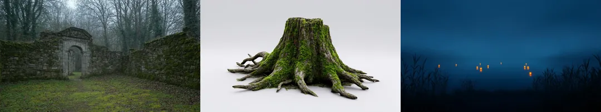
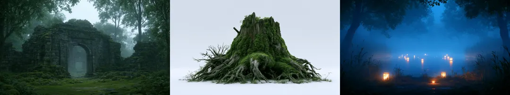
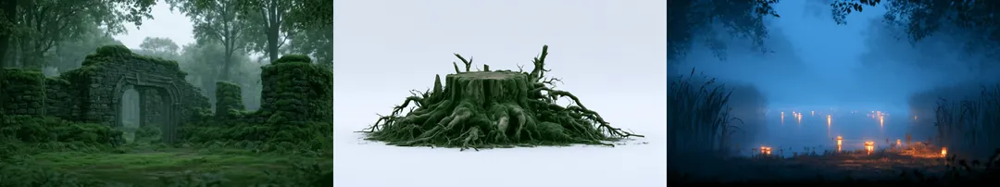
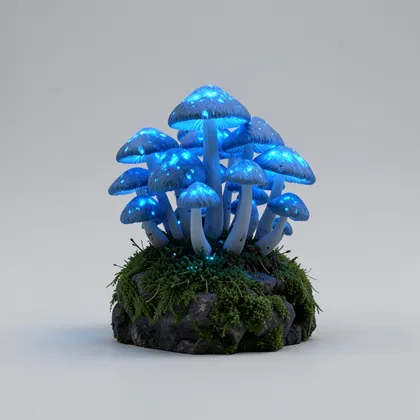
후보 A · FLUX.2 Klein 4B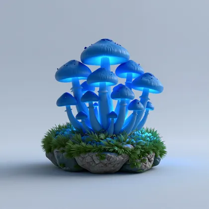
후보 B · Z-Image같은 원본, 같은 주문, 두 화가.
두 후보 모델을 같은 원본으로 학습시키고 같은 주문을 넣은 결과입니다. 한쪽은 질감을, 다른 쪽은 게임에 놓일 구도를 더 잘 잡기도 합니다.
고르는 건 사람입니다.
어느 쪽이 내 원본에 가까운지 나란히 보고 주력을 정합니다. 프리셋은 그 모델에 묶이고, 진 쪽의 결과도 기록으로 남습니다.
원본은 묻히지 않습니다.
AI가 만든 그림으로 다시 학습하면 흠이 진해지고 그림체가 밀립니다. 그래서 원본은 늘 가장 높은 가중치로 들어가고, 원본 비중이 20% 아래로 내려가면 학습 전에 경고합니다.
이전 버전은 남습니다.
새 버전이 원본에서 멀어졌으면 이전 버전으로 돌아갑니다. 어떤 버전으로 무엇을 만들었는지 모든 결과물에 기록됩니다.
주력 모델은 오디션으로 정합니다.
그림체 훈련은 화가 한 명에게만 먹힙니다. 처음 설치할 때 후보 모델 둘에게 같은 원본으로 그리게 해 더 가까운 쪽을 주력으로 정하고, 프리셋은 그 모델에 묶입니다.
조각은 겹쳐 봐야 압니다. 어색한 조각만 콕 집어 다시 만듭니다.
배경은 여러 겹의 레이어로 나옵니다. 낱장이 아니라 조립한 상태로 보고, 클릭 한 번으로 그 조각만 다시 주문합니다.

겹쳐 놓고 카메라를 끕니다.
먼 산은 천천히, 앞 수풀은 빠르게 움직입니다. 시차 값은 레이어마다 정하고, 배치는 구역마다 저장됩니다.
빛을 바꿔 봅니다.
낮 판과 노을 판을 바꾸고, 빛 없는 겹에는 미리보기 조명을 비춰 게임 안에서 어떻게 보일지 봅니다.
반복 띠는 이어 붙여 봅니다.
땅 띠와 숲 띠를 여러 번 이어 놓고 이음매와 윗선이 고르게 이어지는지 확인합니다.
어색한 조각만 다시 만듭니다.
조각을 클릭하고 한 줄 적으면 그것만 다시 만들어져 같은 자리에 들어옵니다. 일부만 칠해서 고칠 수도 있습니다.
원화 한 장에서 겹을 벗겨 조각을 만들고, 뼈를 붙여 움직입니다.
캐릭터를 가위로 오리면 가려져 있던 자리가 비어서, 팔을 돌리는 순간 구멍이 보입니다. Asset Studio는 입은 모습 그대로에서 바깥 겹부터 하나씩 벗겨, 조각마다 온전한 그림을 만듭니다.
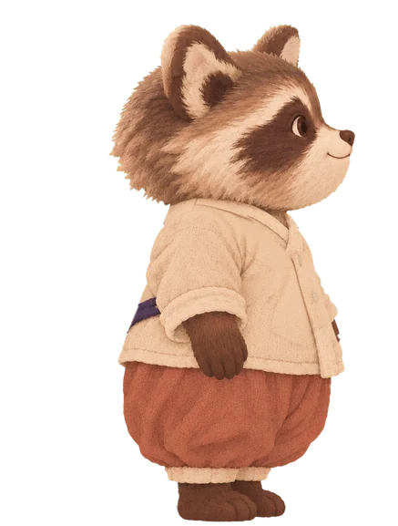
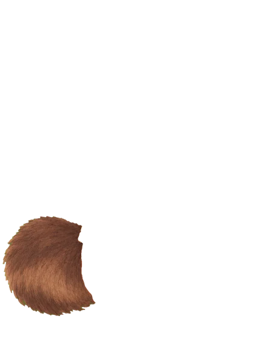
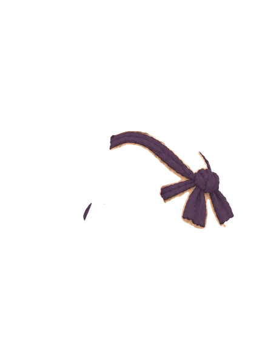
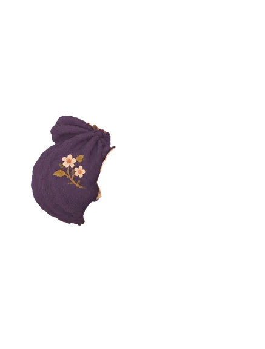
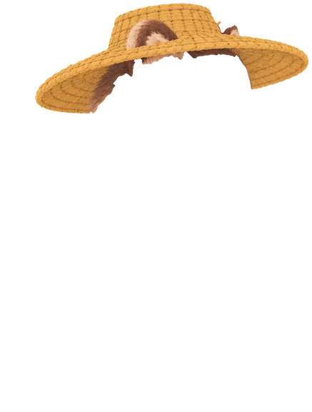
packoon/raccoon · 겹 4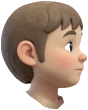
head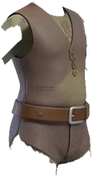
body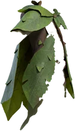
cloak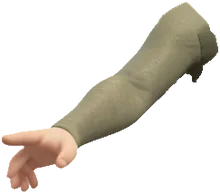
arm_r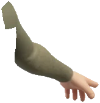
arm_l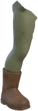
leg_r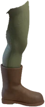
leg_l가려진 자리까지 그려진 조각.
팔이 몸을 가리고 있었다면 몸 조각에는 팔 밑의 옷이 그려져 있습니다. 관절이 만나는 곳은 서로 겹치게 여유를 두어, 크게 움직여도 틈이 벌어지지 않습니다.
눈과 입은 바꿔 끼웁니다.
뜬 눈과 감은 눈, 입 모양은 같은 자리에 겹쳐 둔 레이어입니다. 깜빡임과 표정은 그림을 바꿔 끼워 만듭니다.
이름은 프리셋대로, 어디로든.
조각 이름은 arm_l, leg_r처럼 정해진 것만 써서 애니메이션이 캐릭터끼리 호환됩니다. 레이어 PSD, Godot Skeleton2D 씬, 조각 PNG와 parts.json으로 내보냅니다.
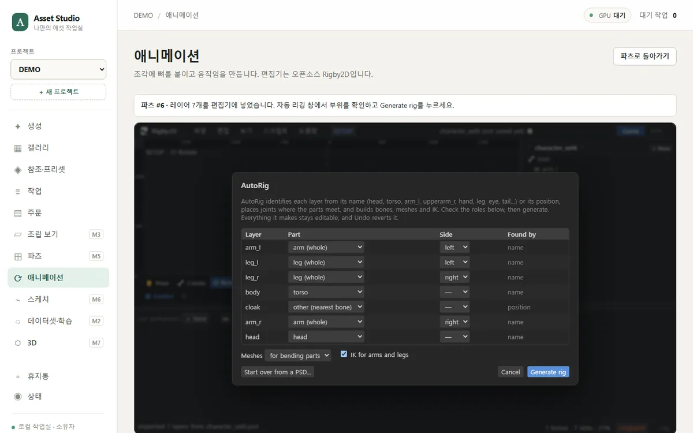
에이전트는 키로 주문하고, 사람이 확정하고, 게임은 매니페스트만 읽습니다.
두 Claude(게임 쪽, Asset Studio 쪽)와 사람이 같은 에셋을 가리키게 하는 규칙입니다.
키는 게임 쪽이 정하고, 바뀌지 않습니다.
village/far_mountain처럼 영문 소문자와 밑줄로 된 키입니다. Asset Studio는 키를 새로 짓거나 바꾸지 않습니다. 파일 이름은 키에 딸린 정보일 뿐입니다.
확정은 사람만 누릅니다.
키마다 후보가 여러 장 생기고, 그중 하나에 확정을 누르는 건 사람입니다. Claude는 추천과 이유를 붙일 뿐이고, 승인·거절·삭제는 할 수 없습니다. 권한은 말이 아니라 토큰으로 막혀 있습니다.
매니페스트가 하나의 기준입니다.
확정하면 키 → 에셋, 버전, 파일 해시가 매니페스트에 오릅니다. 게임 쪽은 그것만 읽고 가져가고, 해시로 받은 파일이 맞는지 확인합니다. 다시 확정하면 버전이 올라가 게임 쪽이 새로 받습니다.
게임이 무엇을 쓸지는 게임이 정하고, 어떤 모양이든 만들어낼 수 있게 했습니다.
구역이 화면 몇 장인지, 레이어가 몇 겹인지는 주문에 담깁니다. Asset Studio는 그 값을 받아 만드는 능력만 갖춥니다.
- 화면 여러 장 폭의 파노라마먼 산·언덕처럼 시차가 작은 겹. 위는 투명, 아래는 끝까지 채우고 위아래 여유를 둡니다.
- 조명 변형같은 그림의 낮 판·노을 판. 구도는 그대로 두고 빛만 바꿔 원본에 연결합니다.
- 이음매 없는 가로 반복 띠숲 띠, 땅 띠, 앞 수풀. 왼쪽 끝과 오른쪽 끝이 이어지도록 이음매를 고치고 검사합니다.
- 빛 없는 디퓨즈 + 재질 맵게임의 2D 조명을 받을 겹. 평평한 조명으로 뽑고 노말맵을 짝으로 만듭니다. 스페큘러와 발광 맵도 주문에 적으면 같이 나옵니다.
- 윗면 가장자리 고정오르막·내리막을 따라 휘어 깔리는 땅 띠. 윗면이 고르게 이어지도록 검사합니다.
- 낱개 소품과 UI 아이콘투명 배경. 나무, 바위, 집, 발판, 물약병 같은 것.
- 캐릭터 조각과 뼈대겹을 벗겨 만든 조각 PNG, 뼈와 가중치(
parts.json), 레이어 PSD, Godot Skeleton2D 씬. - 3D 메시승인한 2D 소품을 내 GPU에서 3D로 바꾸고 목표 폴리곤 수로 줄여 GLB·FBX로 냅니다. 화면에서 돌려 본 뒤 확정합니다.
- 질감 다듬기구도는 그대로 두고 그림을 타일로 나눠 세부를 올립니다. 큰 화면에 쓸 2K 이상 크기.
- 스케치에서 에셋대충 그린 선이나 색 덩어리를 구도로 삼아 같은 그림체로 그립니다.
 디퓨즈노말맵
미리보기 조명 · 횃불
디퓨즈노말맵
미리보기 조명 · 횃불
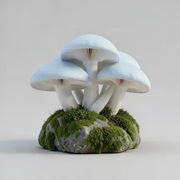
디퓨즈 · 빛 없음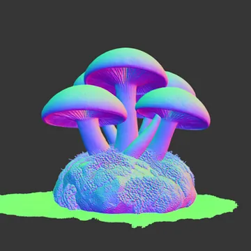
노말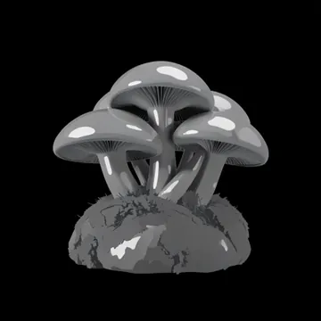
스페큘러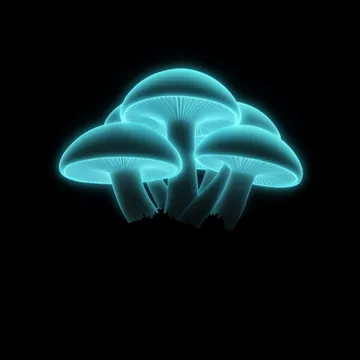
발광prop/housebush_02bush_03reed_01bush_04 reed_02
reed_02Claude는 손이 많은 일을, 사람은 눈이 필요한 일을 합니다.
Claude는 두 군데서 일합니다. 화면 안에서는 프롬프트·캡션·추천을 쓰고, 밖에서는 Claude CLI가 같은 기능을 MCP로 씁니다. 모든 행동은 누가 했는지 기록됩니다.
Claude가 합니다
- 한국어 요청을 영어 프롬프트로. 그림체 단어는 빼고 내용만
- 레퍼런스를 읽어 팔레트·선·채색·조명을 글로 정리
- 학습용 캡션, 톤이 튀는 이미지 찾기
- 후보마다 별점 추천과 한 줄 이유
- 새 LoRA 버전이 원본에 더 가까운지 판단
- 파츠 이름이 맞는지, 색이 어긋난 파츠가 있는지 확인
- 캐릭터에서 벗길 겹의 순서와 관절 위치 제안
- MCP로 생성·변형·질감 다듬기 주문, 결과 조회
사람만 합니다
- 원본 레퍼런스 고르기
- 승인·거절·확정
- 학습 데이터의 별점 확정과 학습 시작 허가
- 새 LoRA 버전을 프리셋에 연결할지
- 삭제, 프리셋 변경
- 파츠의 겹 목록과 관절 위치 확정
- 크레딧이 나가는 외부 서비스 실행
이 경계는 Claude가 쓰는 토큰의 권한으로 막혀 있습니다. 규칙을 읽고 지키는 게 아니라, 넘으려 해도 서버가 거절합니다.
내 PC 한 대에 설치하고, 원본 두 장으로 시작합니다.
설치는 Claude Code가 하고, 사람은 그림체의 기준이 될 원본을 고릅니다. 그다음부터는 주문하고 확정하는 일만 남습니다.
- Claude Code · 한 번
설치합니다.
경로에 한글과 공백이 없는 폴더에 저장소를 받고 설치 명령 하나를 내립니다. ComfyUI, 학습 도구, 모델, Blender를 받아 첫 실행 검증까지 통과시킵니다. 관리자 권한이 필요하면 멈추고 묻습니다.
D:\AI\studio 에 Asset Studio 설치해줘 - 사람
원본 2장을 고르고 주력 모델을 정합니다.
후보 모델 둘에게 같은 원본으로 그리게 해 그림체가 더 가까운 쪽을 주력으로 정합니다. 그 원본이 첫 스타일 프리셋의 기준이 됩니다.
- 게임 쪽 Claude
MCP를 연결하고 주문합니다.
게임 저장소의 설정에 Asset Studio MCP 서버와 토큰을 넣으면, 그 Claude는 키로 주문하고 매니페스트를 읽어 갑니다. 확정은 여전히 화면에서 사람이 누릅니다.
claude mcp add asset-studio -- python -m studio.mcp
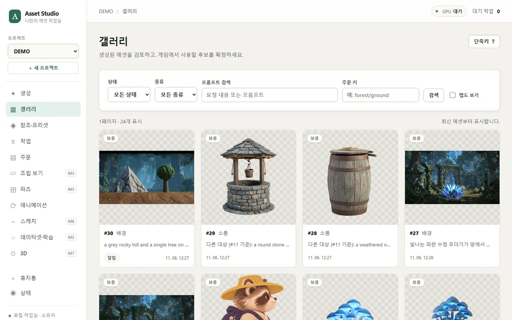
검토함주문·확정 대기 목록 · 조립 검토(배경 레이어, 캐릭터 파츠) · 세트 확정생성스타일 프리셋으로 생성 · 레퍼런스 분석 · 조명 변형 · 반복 띠 · 노말맵 짝갤러리별점 · Claude 추천 · 프롬프트·시드·LoRA 버전 기록 · 승인·거절파츠원화 한 장 → 겹 벗기기 → 관절 배치 → 조각 · 뼈대 미리보기 · parts.json애니메이션조각을 편집기로 넘겨 자동 리깅 · 뼈·메시·IK · 움직임 만들기학습데이터셋 가중치 · LoRA 학습 · 원본과 비교 · 버전 연결스케치 · 3D대충 그린 선에서 에셋 · 승인한 소품을 GLB·FBX로 · 폴리곤 수 줄이기이런 사람에게 맞습니다
- 그림체 하나로 게임 에셋을 수백 장 뽑아야 하는 1인·소규모 개발자
- Claude Code로 게임을 만들면서 에셋도 에이전트에게 주문하고 싶은 사람
- 배경을 레이어로, 캐릭터를 파츠로 쓰는 2D 게임
- 에셋 비용을 월정액이 아니라 내 GPU로 해결하고 싶은 사람
미리 알아 두실 점
- NVIDIA 그래픽카드가 있는 Windows PC가 필요합니다.
- Claude 기능은 Claude Code와 유료 요금제가 있어야 합니다.
- 레퍼런스는 유료 플랜으로 만든 것과 직접 그린 것만 씁니다. 다른 게임의 그림은 쓰지 않습니다.
- 품이 큰 옷을 입은 캐릭터는 조각의 경계를 사람이 손봐야 할 때가 있습니다. 화면에서 영역을 칠해 고칩니다.
- 판매하지 않는 내부 도구입니다. 팀이 같이 쓰는 건 다음 버전입니다.
그림체는 한 번만 정하고, 그다음부터는 주문하고 확정합니다.
만드는 손은 GPU와 Claude가 되고, 사람에게 남는 일은 처음에 원본을 고르는 것과 마지막에 확정을 누르는 것입니다.
첫 프로젝트는 PACKOON입니다. 그림체를 지켜야 하는 어떤 게임에도 프로젝트를 하나 더 만들어 그대로 씁니다.